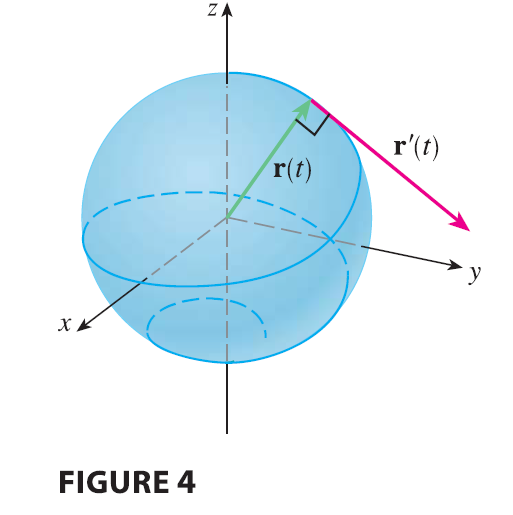

SOLUTION Since
\[
\mathbf{r}(t) \cdot \mathbf{r}(t) = |\mathbf{r}(t)|^2 = c^2
\] and \(c^2\) is a constant,
Formula 4 of Theorem 3 gives \[
0 = \frac{d}{dt}[\mathbf{r}(t) \cdot \mathbf{r}(t)] = \mathbf{r}'(t)
\cdot \mathbf{r}(t) + \mathbf{r}(t) \cdot \mathbf{r}'(t) =
2\mathbf{r}'(t) \cdot \mathbf{r}(t)
\] Thus \(\mathbf{r}'(t) \cdot
\mathbf{r}(t) = 0\), which says that \(\mathbf{r}'(t)\) is orthogonal to \(\mathbf{r}(t)\).

Geometrically, this result says that if a curve lies on a sphere with
center the origin, then the tangent vector \(\mathbf{r}'(t)\) is always
perpendicular to the position vector \(\mathbf{r}(t)\). (See Figure 4.)